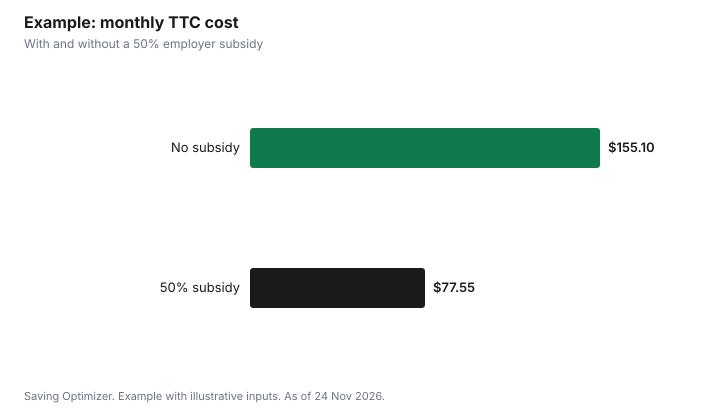

Transportation · Canada
How to Ask HR About Corporate PRESTO or Compass Fare Programs

In Toronto, the TTC's old employer pass discount ended years ago, and fare capping now limits adult fares to $155.10 a month. So the useful ask is a transit subsidy, not a discount program. In Metro Vancouver, TransLink's Transit-Friendly Employer program is built around employers paying at least half the pass. Ask how any subsidy is taxed, and bring a short script.
Key takeaways
- The TTC's employer pass discount (VIP) ended in 2018.
- TTC fare capping: $3.30 a trip, capped at 47 trips, or $155.10 a month (checked 24 Nov 2026).
- TransLink Transit-Friendly Employers pay at least 50% of the pass.
- CRA: employer-paid transit is generally a taxable benefit; ask payroll.
- Example: a 50% subsidy on the TTC cap is $77.55 a month.
What exists now
| Region | Program | What it means |
|---|---|---|
| Toronto (TTC) | Fare capping on PRESTO, debit or credit | Free rides after 47 paid trips a month; no employer discount needed |
| Toronto (TTC) | Volume Incentive Program | Discontinued in 2018 |
| Metro Vancouver (TransLink) | Transit-Friendly Employer | Employer pays at least 50% of the pass |
A script for HR
- "Do we offer a transit subsidy or a commuter benefit?"
- "Would you consider paying part of monthly transit, the same way we support parking?"
- "How would payroll report it, and would it be taxable?"
- "Could it work for hybrid staff, for example a per-trip reimbursement?"

Savings: an example
Example: if your employer pays 50% of the $155.10 TTC cap, you save $77.55 a month before tax. If it's taxable, your take-home benefit is smaller. See employer transit subsidies and tax and TTC fare capping.
Sources
- University of Toronto HR, Discontinuation of the TTC Volume Incentive Program (18 Oct 2018), checked 24 Nov 2026.
- TTC, Monthly fare capping and fare types, checked 24 Nov 2026.
- TransLink, Transit-Friendly Employer program overview and 2025 Accountability Report, checked 24 Nov 2026.
- Canada Revenue Agency, T4130 Employers' Guide – Taxable Benefits and Allowances, checked 24 Nov 2026.
Frequently asked questions
Does the TTC still have an employer pass discount?
No. The TTC's Volume Incentive Program was discontinued in 2018.
How does TTC fare capping work?
Adults pay for up to 47 trips a month, a $155.10 cap, then ride free.
What is TransLink's Transit-Friendly Employer program?
Employers that subsidize at least 50% of staff transit passes can be certified.
Is an employer transit subsidy taxable?
CRA says employer-paid transit is generally a taxable benefit. Ask payroll.
What if my employer has no program?
Ask for a subsidy or per-trip reimbursement, or look at biking and hybrid days.
Researched and drafted with AI assistance and fact-checked against official Canadian sources. How we create content.
Note: Not tax advice; ask payroll. Subsidy is an example. Education only.